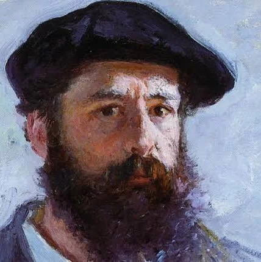

Pelukis terkenal di dunia telah memberikan pengaruh besar terhadap perkembangan seni rupa dari masa ke masa. Melalui karya-karya mereka, dunia dapat melihat keindahan, emosi, dan cara pandang unik terhadap kehidupan, alam,
serta manusia itu sendiri. Setiap pelukis memiliki gaya, teknik, dan pesan tersendiri yang menjadikan karya mereka abadi dan menginspirasi generasi berikutnya. Dari masa Renaissance hingga era modern, para seniman besar ini tidak hanya menciptakan lukisan yang indah, tetapi juga membuka jalan bagi lahirnya berbagai aliran seni dan perubahan cara kita memandang seni itu sendiri.
|  |
Claude Monet dikenal juga dengan nama Oscar-Claude Monet atau Claude Oscar Monet adalah pelukis Prancis dengan aliran impresionisme. Lukisannya Impression
, Sunrise adalah asal nama penamaan aliran impresionisme. |
CLOUDE MONET |
VINCENT VAN GOGH |
| Vincent Willem van Gogh adalah seorang pelukis pascaimpresionis Belanda yang menjadi salah satu
tokoh paling terkenal dan berpengaruh dalam sejarah seni di Barat. |
. |